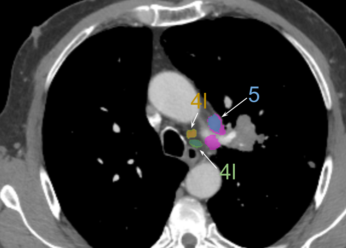
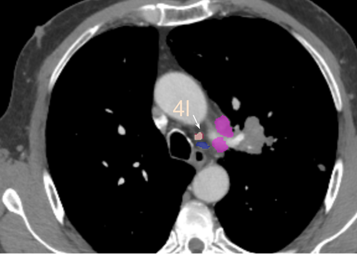

Mediastinal Lymph Node Analysis
MLN Segmentation & Station Classification & Malignancy Classification
The Mediasten project presents a unified CT-based framework for comprehensive mediastinal lymph node (MLN) analysis, addressing three critical clinical tasks: automated segmentation/detection, precise IASLC station mapping across 16 classes, and malignancy classification. This research addresses significant limitations in existing public datasets and provides a clinically validated approach to automated lymph node assessment.
The project utilized 69 cases from histopathologically confirmed lung cancer patients, with manual segmentation and labeling of 1,210 lymph nodes across stations 1-11 according to IASLC guidelines. The framework demonstrates expert-level consistency, achieving performance comparable to interobserver agreement among radiologists.
Visualizations & Results



Project Metrics
(Benign / Malignant)